📚 Índice
- 1. Introducción
- 2. Protocolo DHCP
- 2.1. Mensajes DHCP
- 2.2. Asignación, renovación y liberación
- 2.3. Reasignación y servidores autorizados
- 2.4. Ámbitos, rangos, exclusiones, reservas y concesiones
- 📝 Cuestionario
- 3. Alternativas a DHCP
- 📝 Práctica 2.1
- 4. Servidor DHCP
- 5. Agente DHCP Relay
- 6. Cliente DHCP
- 7. Protocolo BOOTP
- 📝 Actividad
- Resumen
- 📝 Ejercicios propuestos
- 📝 Supuestos prácticos
- Autoevaluación
- Bibliografía
1. Introducción
Ya sea en el hogar, en el trabajo, en un aeropuerto o en una cafetería, siempre existirá alguna red que estará disponible para su uso. La gran mayoría de esas redes serán redes inalámbricas, aunque también es posible que en otras ocasiones sean accesibles a través de rosetas de conexión.
En cualquier caso, y sea cual sea el método de conexión, lo más probable es que dentro de esa red exista algún servidor encargado de suministrar los datos de configuración IP. A este servicio se le conoce como DHCP.
2. Protocolo DHCP
El protocolo DHCP (Dynamic Host Configuration Protocol o Protocolo de configuración dinámica de host) es un protocolo de la capa de aplicación encargado de configurar automática y dinámicamente los parámetros de conexión de los equipos cliente de una red.
Es utilizado en arquitecturas cliente-servidor y da nombre a los servidores que lo implementan.
💡 ¿Sabías que...?
Aunque su uso suele ser más conocido en redes LAN, el protocolo DHCP también se emplea en redes WAN. Normalmente, cada router doméstico obtiene los datos de configuración de forma dinámica desde un servidor DHCP que le ofrece una dirección IP pública dinámica.
IPv6 — Cliente: puerto 546 · Servidor: puerto 547
Características y funcionamiento
El servidor DHCP posee un listado con direcciones IP que van asignándose a los clientes que solicitan parámetros de configuración, y conocerá en todo momento los dispositivos a los que les ha concedido parámetros de conexión, así como el momento en el que lo ha hecho.
Un servidor DHCP puede trabajar de tres formas diferentes, combinando algunas de ellas incluso al mismo tiempo:
- Asignación estática: el servidor asigna una dirección IP concreta a una máquina determinada, identificada por su dirección MAC o el identificador de cliente. Evita que se conecten clientes no identificados.
- Asignación automática: el servidor asigna una dirección IP a una máquina cliente la primera vez que hace la solicitud, y esta la puede utilizar hasta que decida liberarla. Se suele utilizar en escenarios con un número reducido de clientes que se conectan de forma frecuente.
- Asignación dinámica: el servidor dispone de un rango de direcciones IP que se ofrecen a los clientes que solicitan parámetros válidos de conexión. Es el único método que permite la reutilización dinámica de las direcciones IP. Suele utilizarse en redes con un elevado número de clientes.
💡 Recuerda
Además de las alternativas descritas, un cliente también puede configurarse de forma manual estableciendo él mismo los parámetros de configuración de sus interfaces de red.
2.1. Mensajes DHCP
Toda comunicación conlleva un intercambio de mensajes que están claramente tipificados por el protocolo.
| Mensaje | Descripción | Emisor / Puerto |
|---|---|---|
| DHCPDISCOVER | Permite descubrir la existencia de posibles servidores DHCP en la red. Se envía mediante difusión (broadcast). | Cliente · 68 UDP |
| DHCPOFFER | Respuesta con la concesión ofrecida al cliente. Incluye una dirección de red disponible en el campo «yiaddr» y otros parámetros de configuración. | Servidor · 67 UDP |
| DHCPREQUEST | Indica qué servidor de los que han emitido un DHCPOFFER ha sido seleccionado (descartando al resto). También se utiliza para renovar la concesión. | Cliente · 68 UDP |
| DHCPACK | Contiene los parámetros de configuración de la solicitud del cliente y confirma la concesión. | Servidor · 67 UDP |
| DHCPNACK | Deniega la solicitud que hace el cliente (por ejemplo, la dirección solicitada ya no es válida o ya está asignada). | Servidor · 67 UDP |
| DHCPDECLINE | El cliente notifica que la dirección concedida ya está en uso, por lo que rechaza la concesión. | Cliente · 68 UDP |
| DHCPRELEASE | Libera la concesión actualmente en uso. | Cliente · 68 UDP |
| DHCPINFORM | Permite solicitar parámetros extra de configuración local (dominio, servidores DNS...). La respuesta del servidor es un DHCPACK. | Cliente · 68 UDP |
2.2. Asignación, renovación y liberación
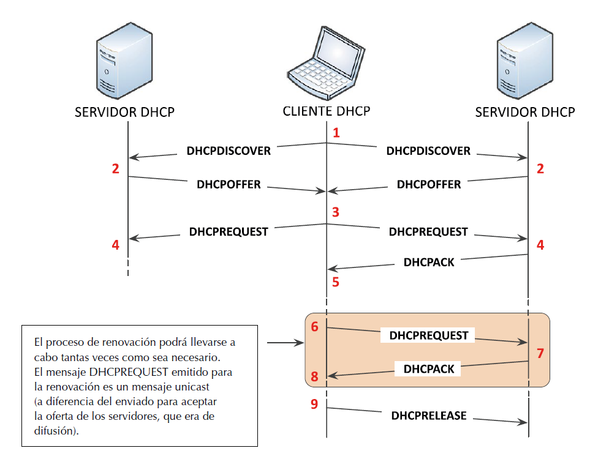
a) Asignación
- El cliente inunda la red con un mensaje DHCPDISCOVER (broadcast) con el que pretende obtener una asignación de datos de configuración válidos.
- El servidor recibe el mensaje y prepara la respuesta DHCPOFFER (unicast), que incluye una dirección de red disponible (campo «yiaddr») y otros parámetros de configuración.
- El cliente selecciona una oferta entre todas las recibidas y difunde un mensaje DHCPREQUEST (broadcast) identificando al servidor elegido y descartando al resto.
- El servidor recibe el DHCPREQUEST. Si acepta la solicitud, responde con un DHCPACK; si no puede satisfacerla, responde con un DHCPNACK.
- Si el cliente recibe un DHCPACK, valida los datos (mediante ARP comprueba que la dirección no esté en uso) y queda configurado. Si detecta un conflicto, envía un DHCPDECLINE y reinicia el proceso.
b) Renovación
Las concesiones tienen un tiempo máximo de caducidad conocido como lease time, pero además existen otros dos tiempos:
- Renewal time o T1: tiempo tras el cual el cliente intenta renovar la concesión con el servidor que se la ofreció (unicast). Por defecto, el 50 % del tiempo total de la concesión.
- Rebinding time o T2: tiempo tras el cual el cliente difunde (broadcast) un DHCPREQUEST solicitando la renovación a cualquier servidor DHCP. Por defecto, el 87,5 % del tiempo total de la concesión.
Si el servidor acepta la renovación envía un DHCPACK; en caso contrario, un DHCPNACK, y el cliente reiniciará el proceso con un DHCPDISCOVER.
c) Liberación
El cliente puede renunciar a su concesión enviando un mensaje DHCPRELEASE al servidor. Es una comunicación unidireccional que no necesita respuesta y puede motivarla, por ejemplo, el apagado del equipo.
💡 Para saber más
El mensaje DHCPREQUEST emitido para la renovación es unicast, a diferencia del enviado para aceptar la oferta de los servidores durante la asignación inicial, que es de difusión.
2.3. Reasignación y servidores autorizados
Reasignación de concesión
Es posible que un equipo se apague y se encienda de nuevo mientras su concesión sigue siendo válida. En ese caso, el cliente puede solicitar el restablecimiento del arrendamiento existente sin realizar todo el proceso completo de asignación:
- El cliente difunde un DHCPREQUEST (broadcast) con información sobre la concesión actual, sin incluir la opción que identifica al servidor.
- El servidor responde con DHCPACK si la concesión es válida, con DHCPNACK si no lo es, o no responde si no tiene información sobre ella.
Servidores autorizados
Se puede dar el caso de que un cliente intente renovar la concesión y emita sus mensajes de renovación DHCPREQUEST justo después de haber accedido a una red diferente de aquella en la que estaba cuando obtuvo la concesión. En este caso, el servidor DHCP de la nueva red escuchará los mensajes, pero para una dirección que no ha proporcionado él.
Si este servidor se ha configurado como NO AUTORIZADO, obviará esas solicitudes de renovación con la finalidad de que sea el servidor DHCP original de esas concesiones el que se encargue de renovarlas. Sin embargo, dicho servidor no será accesible al cliente, por lo que será imposible que la concesión se renueve y el cliente quedará mal configurado y sin conexión hasta que la concesión expire, lo cual podría suponer una considerable demora.
Para mitigar este problema, un servidor DHCP puede configurarse como AUTORIZADO. Así, tan pronto como detecte un cliente mal configurado que pretende renovar su concesión, le enviará un mensaje DHCPNAK, forzando de esta manera a liberar sus datos actuales de configuración y a comenzar de nuevo el proceso de solicitud de concesión con un mensaje DHCPDISCOVER que será atendido esta vez por el servidor correcto para dicha red.
2.4. Ámbitos, rangos, exclusiones, reservas y concesiones
Un ámbito, en DHCP, es la agrupación administrativa de clientes de una subred a los que se les suministran determinados parámetros de conexión. Dentro de cada ámbito se definen rangos de direcciones, exclusiones y reservas.
- Rango: conjunto de direcciones consecutivas disponibles para ofrecerse a los clientes.
- Exclusión: dirección dentro de un rango que no debe ofrecerse a los clientes, por ser especial o estar en uso permanente.
- Reserva: dirección del rango que se desea adjudicar siempre a un equipo concreto, identificado por su dirección MAC o identificador de cliente.
- Concesión (lease): resultado de la asignación de una dirección a un cliente, almacenado en el servidor junto con su periodo máximo de validez.
📝 Cuestionario
- ¿Cuál es la diferencia entre un servidor DHCP autorizado y uno no autorizado?
- ¿Qué mensaje permite notificar a un servidor DHCP que su oferta es inválida?
- ¿Qué mensaje o mensajes intercambiados entre cliente y servidor DHCP se envían a la dirección de broadcast?
- Define qué es un ámbito en DHCP.
- ¿Qué diferencia existe entre una exclusión y una reserva?
3. Alternativas a DHCP
Dado que no siempre es posible encontrar un servidor DHCP desde el que realizar la configuración de la interfaz de red, es importante conocer qué mecanismos alternativos existen para evitar dejar aislado al dispositivo.
Configuración manual
En ausencia de mecanismos de configuración automática, o incluso en presencia de ellos, es posible realizar la configuración de las interfaces de forma manual. Como datos mínimos de configuración en un equipo que trabajará sobre la pila de protocolos TCP/IP siempre será necesario establecer la dirección IP y la máscara, en caso de trabajar con IPv4, o la dirección IP y la longitud del prefijo de red, si se trabaja con IPv6.
A) Microsoft Windows
Para llevar a cabo la configuración manual sobre sistemas operativos Windows, será necesario establecer en las propiedades del protocolo IP de la interfaz de red la opción «Usar la siguiente dirección IP» indicando, como mínimo, dirección IP y máscara asociada o prefijo de subred (dependiendo de si configura IPv4 o IPv6).
Si el equipo dispone de más de una interfaz de red, no es conveniente establecer más de un valor en «Puerta de enlace predeterminada».
B) Linux
Hasta la llegada de Ubuntu 17.10 (y «sabores» derivados) se
empleaba el fichero de configuración de interfaces de red
/etc/network/interfaces. Sin embargo, a partir
de dicha versión se introdujo la utilidad
netplan, la cual lee la configuración de red de los
ficheros con extensión .yaml contenidos en el
directorio /etc/netplan/ al iniciarse el
sistema y genera los ficheros de configuración específicos
para el demonio encargado de gestionar las conexiones.
La aplicación netplan puede trabajar con dos tipos de renderer:
- NetworkManager: empleado, generalmente, en equipos de escritorio. Busca ofrecer conectividad ininterrumpida, de manera que, si un equipo dispone de conexiones de red cableada e inalámbrica, usará la conexión de red cableada cuando esté disponible, pero cambiará automáticamente a una conexión inalámbrica cuando el usuario la desconecte y, del mismo modo, volverá a utilizar la conexión cableada cuando esta vuelva a estar disponible.
- Systemd-networkd: empleado principalmente en equipos servidor.
A continuación, se muestra el fichero
/etc/netplan/01-network-manager-all.yaml en el
que se lleva a cabo la configuración de ejemplo de un
servidor con las interfaces de red «enp0s3» y «enp0s8». En
él se indica que las IP/Máscara serán 172.16.0.220/24 y
172.16.1.220/24, la puerta de enlace 172.16.0.1, el dominio
de búsqueda ejemplo.local y los servidores DNS
172.16.0.4 y 172.16.0.5. En caso de que el renderer
fuera NetworkManager (equipo cliente), el fichero de
configuración sería similar, salvo en el parámetro
renderer, cuyo valor sería NetworkManager.
network:
version: 2
renderer: networkd
ethernets:
enp0s3:
addresses: [172.16.0.220/24]
gateway4: 172.16.0.1
nameservers:
search: [ejemplo.local]
addresses: [172.16.0.4, 172.16.0.5]
enp0s8:
addresses: [172.16.1.220/24]Para aplicar los cambios que se hayan podido producir en los ficheros de configuración, será necesario ejecutar el comando siguiente:
sudo netplan applyAPIPA (IPv4)
En sistemas Microsoft, este mecanismo se conoce como APIPA (Automatic Private Internet Protocol Addressing), descrito en la RFC 3927. Su equivalente en Linux es el demonio avahi-autoipd.
Permite obtener una dirección IP y máscara con funcionalidad básica cuando no hay servidor DHCP disponible, comprobando previamente por broadcast que la dirección elegida no esté en uso. La asignación es temporal: cada cinco minutos el equipo intenta conectar de nuevo con un servidor DHCP.
IANA reservó el rango 169.254.0.0/16 para este direccionamiento privado automático (bloque link-local, RFC 3330).
SLAAC (IPv6)
En IPv6, el mecanismo de asignación automática es SLAAC (Stateless Address Autoconfiguration, RFC 4862):
- El nodo crea automáticamente una dirección de enlace local con el prefijo fe80::/10.
- Recibe un mensaje ICMPv6 134 (Router Advertisement) del router, que le indica cómo completar la configuración: solo con SLAAC, con SLAAC + DHCPv6, o completamente con DHCPv6.
📝 Práctica 2.1: Instalación de Windows Server
-
Instala Windows Server 2025 Standard cumpliendo los siguientes requisitos:
- Prepara la máquina virtual de nombre WINDOWSSERVERSER con un disco duro de 80 GB dinámico y 4 GB de RAM.
- Crea una partición de 60 GB NTFS donde instalaremos el servidor. El resto de espacio libre será una partición NTFS denominada DATOS.
-
El sistema lo configuraremos de la siguiente
manera:
-
El nombre del equipo:
2025SERVER01,2025SERVER02, ... -
La contraseña para el usuario
Administrador será
P@ssw0rd. - En Grupo de Trabajo o dominio del equipo: escoger la opción de grupo de trabajo con el nombre SER.
-
El nombre del equipo:
- Instala las «Guest Additions» en VirtualBox.
- Realiza capturas de pantalla donde aparezca el nombre de tu servidor, el grupo de trabajo y las particiones realizadas.
Nota: la práctica se entregará en el
aula virtual en formato PDF, indicando en el fichero el
número de práctica y tu nombre con el siguiente
formato: prácticaX.X_nombre.pdf.
4. Servidor DHCP
Sea cual sea el escenario, es conveniente que el equipo que va a ofrecer el servicio DHCP disponga de una dirección IP fija.
Sin embargo, en la inmensa mayoría de los hogares el servicio DHCP ni siquiera es ofrecido por ningún equipo dedicado a ofrecer dicho servicio, sino que es el router proporcionado por el ISP el encargado de suministrarlo. Sea cual sea el escenario, es conveniente que el equipo que va a ofrecer el servicio DHCP disponga de una dirección IP fija.
En este apartado se abordará la instalación, configuración, manejo y monitorización de servidores DHCP dedicados para su implantación en redes corporativas, sin entrar en detalle en cómo realizar la configuración mediante routers domésticos. Para ello se muestran los pasos que seguir para realizar la instalación y configuración del servicio conforme al escenario descrito a continuación:
| Configuración del servidor |
Interfaces del red del servidor | Primera interfaz | 172.16.0.220/24 |
|---|---|---|---|
| Segunda interfaz | 172.16.1.220/24 |
||
| Configuración del servicio DHCP |
Dominio | ejemplo.local |
|
| Autoritativo | Sí | ||
| Permitir actualizaciones dinámicas | No | ||
| Tiempo de concesión | Por defecto | 10 minutos | |
| Máximo | 2 horas | ||
| Servidores DNS | 172.16.0.4, 172.16.0.5 |
||
| Subred 1 | Rango | 172.16.0.100 - 172.16.0.200 |
|
| Gateway | 172.16.0.1 |
||
| Máscara | 255.255.255.0 |
||
| Subred 2 | Rango | 172.16.1.100 - 172.16.1.200 |
|
| Gateway | 172.16.1.1 |
||
| Máscara | 255.255.255.0 |
||
| Reservas | PC 1 | MAC | 08:00:27:00:01:0C |
| Dirección | 172.16.0.66 |
||
| Gateway | 172.16.0.1 |
||
| PC 2 | MAC | 08:00:27:D2:2E:33 |
|
| Dirección | 172.16.1.244 |
||
| Gateway | 172.16.1.1 |
||
Cuadro 2.2. Configuración del servidor y del servicio DHCP.
4.1. Implementación con Microsoft Windows Server
Instalación del servicio desde PowerShell (con privilegios de administrador):
Install-WindowsFeature DHCP -IncludeManagementToolsUna vez instalado, se configura desde la herramienta dhcpmgmt.msc, indicando enlaces, creando ámbitos (rango, máscara, exclusiones, tiempo de concesión, puerta de enlace, DNS) y, si procede, reservas identificadas por dirección MAC.
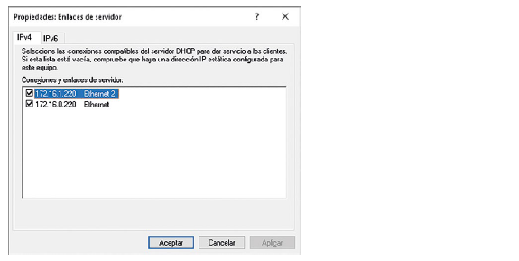
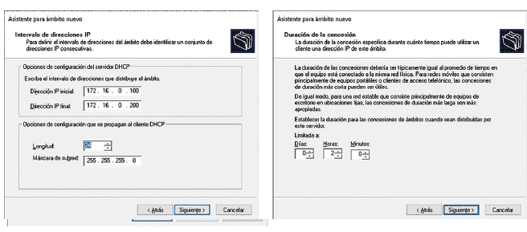
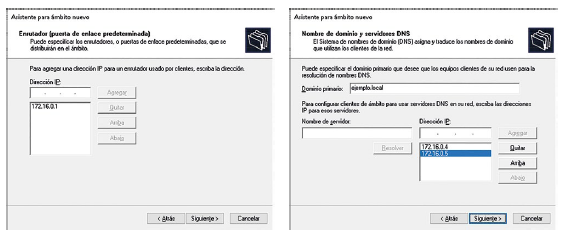
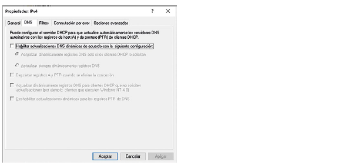
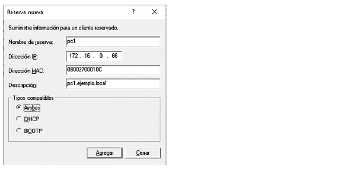
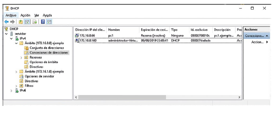
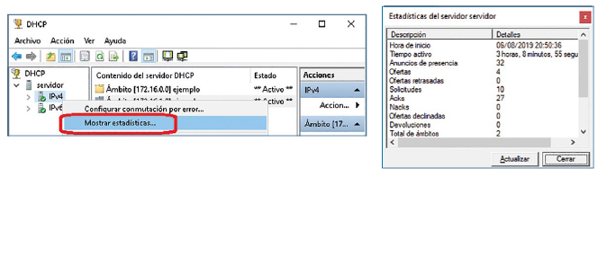
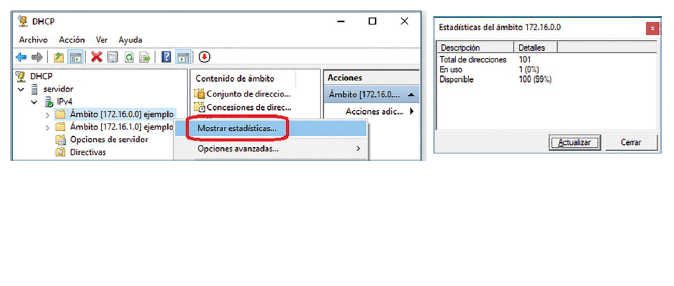
Administración del servicio mediante cmdlets de PowerShell:
[Start|Stop|Suspend|Resume|Restart|Get]-Service -name DHCPServer
La monitorización se realiza desde la propia consola de
administración («Concesiones de direcciones») y mediante
los ficheros de log en
%windir%\system32\dhcp\DhcpSrvLog-XXX.log.
4.2. Implementación con Ubuntu Server (ISC DHCP)
Instalación:
sudo apt-get update -y
sudo apt-get install isc-dhcp-server -y
Las interfaces por las que el servicio atenderá peticiones
se indican en
/etc/default/isc-dhcp-server:
INTERFACESv4="enp0s3 enp0s8"
INTERFACESv6="enp0s3 enp0s8"
La configuración del servicio se realiza en
/etc/dhcp/dhcpd.conf. Ejemplo con dos subredes
que comparten red física y dos reservas:
option domain-name "ejemplo.local";
option domain-name-servers 172.16.0.4, 172.16.0.5;
option subnet-mask 255.255.255.0;
default-lease-time 600; # 10 minutos
max-lease-time 7200; # 2 horas
ddns-update-style none;
authoritative;
server-name "dhcp.ejemplo.local";
shared-network SUBRED_COMPARTIDA {
subnet 172.16.0.0 netmask 255.255.255.0 {
range 172.16.0.100 172.16.0.200;
option routers 172.16.0.1;
}
subnet 172.16.1.0 netmask 255.255.255.0 {
range 172.16.1.100 172.16.1.200;
option routers 172.16.1.1;
}
}
group {
host pc1 {
hardware ethernet 08:00:27:00:01:0C;
option host-name "pc1.ejemplo.local";
fixed-address 172.16.0.66;
option routers 172.16.0.1;
}
host pc2 {
hardware ethernet 08:00:27:D2:2E:33;
option host-name "pc2.ejemplo.local";
fixed-address 172.16.1.244;
option routers 172.16.1.1;
}
}Arranque, parada y consulta de estado mediante systemctl:
sudo systemctl [restart|start|status|stop] isc-dhcp-server.service💡 Recuerda
En sistemas Linux/UNIX, los cambios en los ficheros de configuración no surten efecto hasta que el servicio se recarga o reinicia.
Las concesiones se registran en
/var/lib/dhcp/dhcpd.leases, y pueden
consultarse de forma legible con la herramienta
dhcp-lease-list. El PID del servicio se
encuentra en /var/run/dhcpd.pid.
$ dhcp-lease-list MAC IP hostname valid until 08:00:27:00:01:0c 172.16.0.66 pc1 2026-09-23 10:15:00 08:00:27:d2:2e:33 172.16.1.244 pc2 2026-09-23 10:18:32
| Parámetro / declaración | Función |
|---|---|
option domain-name-servers |
Establece los servidores DNS. |
default-lease-time / max-lease-time |
Tiempo de concesión por defecto y máximo (segundos). |
[not] authoritative |
Establece si el servidor es autorizado o no. |
subnet ... netmask ... { } |
Declaración obligatoria por cada subred servida. |
range IP_INICIO IP_FIN |
Intervalo de direcciones ofertadas. |
host NOMBRE { } |
Configuración estática para un cliente concreto. |
fixed-address IP |
Dirección IP fija asociada a una declaración host. |
5. Agente DHCP Relay
Los mensajes broadcast (como un DHCPDISCOVER) no son enrutados por defecto entre redes distintas, por lo que un servidor DHCP de una red no puede atender directamente peticiones de clientes ubicados en otra red.
La solución más viable es emplear agentes DHCP Relay: elementos retransmisores que capturan las peticiones de los clientes y las reenvían a los servidores DHCP de otras redes, transformando el tráfico broadcast en unicast.
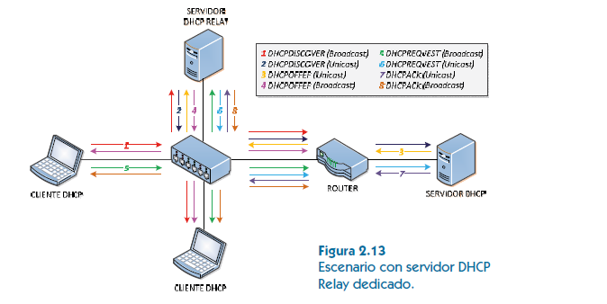
El agente puede ejecutarse en un servidor independiente o estar embebido en un router (por ejemplo, en equipos Cisco).
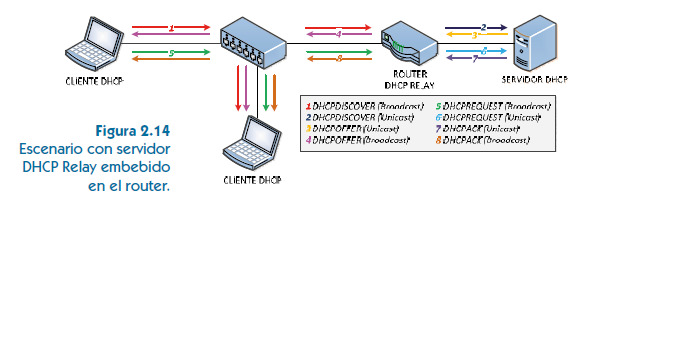
6. Cliente DHCP
6.1. Cliente Microsoft Windows
El servicio «Cliente DHCP» debe estar habilitado y la
interfaz configurada con «Obtener una dirección IP
automáticamente». Se administra con el comando
ipconfig:
ipconfig /release[6] [adaptador] # Libera la concesión
ipconfig /renew[6] [adaptador] # Renueva la concesión
Si se añade el sufijo 6, la operación se
realiza para IPv6; de lo contrario, únicamente para IPv4.
6.2. Cliente Ubuntu Linux
La obtención automática de parámetros se indica en el fichero de netplan:
network:
version: 2
renderer: NetworkManager
ethernets:
enp0s3:
dhcp4: trueEl cliente DHCP en Linux es dhclient:
sudo dhclient [-4|-6] [-r] [interfaz]
Las opciones -4 / -6 indican el
protocolo (por defecto, IPv4). La opción -r
libera la dirección; su omisión indica renovación. La
concesión queda registrada en
/var/lib/dhcp/dhclient.leases.
7. Protocolo BOOTP
Los orígenes de DHCP residen en el protocolo BOOTP (Bootstrap Protocol, RFC 951), que también trabaja sobre UDP. Los clientes lo utilizan para obtener una dirección IP automáticamente y, una vez asignada, cargar la imagen de un sistema operativo con el que arrancar mediante el protocolo TFTP.
Inicialmente era necesario un dispositivo de arranque específico (disquete), pero hoy en día esta funcionalidad se incluye de base en la práctica totalidad de las BIOS y UEFI del mercado.
📝 Actividad: Instalación de un servidor DHCP
-
Realiza la instalación de un servidor DHCP sobre Linux Ubuntu Server con dirección IP fija 192.168.100.100/24.
-
Configura el reparto del resto de direcciones de la red entre los clientes, excluyendo la dirección del router (192.168.100.1), la propia dirección del servidor y las direcciones de red y broadcast.
-
Da de alta una reserva para que un cliente concreto reciba siempre la dirección 192.168.100.200. Arranca el cliente y comprueba que recibe dicha configuración.
-
Monitoriza el estado del servidor y las concesiones realizadas, y libera desde algún cliente la configuración recibida.
Resumen
- Los equipos pueden conectarse a una red sin configurar manualmente sus interfaces gracias al servicio DHCP.
- Un agente DHCP Relay permite que un servidor DHCP dé servicio a equipos de otras redes.
- Un servidor DHCP puede ser autorizado o no autorizado.
- El protocolo puede encontrarse tanto en redes LAN como en redes WAN.
- En IPv4, el cliente utiliza el puerto 68 UDP y el servidor el puerto 67 UDP.
- En IPv6, los clientes emplean el puerto 546 UDP y los servidores el 547 UDP.
- Los mensajes del protocolo son: DHCPDISCOVER, DHCPOFFER, DHCPREQUEST, DHCPACK, DHCPNACK, DHCPDECLINE, DHCPRELEASE y DHCPINFORM.
- Como alternativas a DHCP existen la configuración manual, APIPA/avahi-autoipd (IPv4) y SLAAC (IPv6).
- El protocolo BOOTP es el precursor de DHCP.
📝 Ejercicios propuestos
- Describe la diferencia existente entre un servidor DHCP autorizado y uno no autorizado.
- ¿Qué mensaje permite notificar a un servidor DHCP que su oferta es inválida?
- ¿Qué mensaje o mensajes intercambiados entre cliente y servidor DHCP van enviados a la dirección de broadcast?
- ¿Cuántos servidores DHCP es posible instalar en una red? Justifica tu respuesta.
- ¿Es posible que un servidor DHCP atienda peticiones de clientes que se encuentran ubicados físicamente en una red diferente? Justifica tu respuesta.
- Dado que el servicio DHCP permite que los equipos de una red se configuren automáticamente, ¿es posible configurar el equipo que ofrece el servicio DHCP a partir del servicio que él mismo está ofreciendo? Justifica tu respuesta.
- Define qué es un ámbito en DHCP.
📝 Supuestos prácticos
-
Establece la configuración de un equipo servidor Windows Server de forma manual, para que quede preparado antes de realizar la instalación del servidor DHCP. Dispondrá de dos interfaces de red independientes y los parámetros de conexión deben ser los siguientes:
- Direcciones: 192.168.1.2/25, 192.168.1.130/25.
- Puerta de enlace: 192.168.1.1.
- Dominio de búsqueda: smr2.local».
- Direcciones de los servidores DNS: 192.168.1.2, 192.168.1.3.
-
Establece la configuración manual de un equipo servidor Ubuntu Server, para que quede preparado antes de realizar la instalación del servidor DHCP. Los parámetros de conexión deben ser los mismos que los del supuesto práctico anterior.
-
En el siguiente supuesto práctico se llevará a cabo la instalación y configuración de un servidor DHCP que pueda dar soporte a una organización. Sigue los siguientes pasos:
- Realiza la instalación de un servidor DHCP sobre Linux Ubuntu Server.
- Establece la dirección IP fija 192.168.100.100/24.
-
Configura el servidor para que realice el
reparto del resto de direcciones IP de la red
entre los clientes. Deberán excluirse del
reparto:
- La dirección 192.168.100.1 por ser la dirección del router.
- La propia dirección del servidor DHCP.
- Las direcciones de red y broadcast que no podrán ser empleadas por los clientes como direcciones unicast válidas.
- Configura un cliente desde un entorno de virtualización para que disponga de una dirección MAC concreta, así como para que reciba sus parámetros de conexión de forma automática. Acto seguido, da de alta una reserva en el servidor DHCP para que a dicho cliente siempre se le asigne la dirección 192.168.100.200. Arranca el cliente y comprueba si recibe la configuración establecida en la reserva.
- Arranca nuevos clientes configurados para obtener sus parámetros de red de forma automática y comprueba que son configurados correctamente por el servidor.
- Monitoriza el estado del servidor y las concesiones realizadas a los clientes.
- Libera desde algún cliente la configuración recibida.
- Utiliza una herramienta de monitorización de redes para analizar el tráfico DHCP intercambiado entre servidor y clientes. Presta atención a los campos de cada mensaje.
- Repite el escenario creado en el ejercicio propuesto anterior utilizando ahora el servidor que ofrece el sistema operativo Microsoft Windows Server.
Autoevaluación
1. ¿Qué método de asignación es más adecuado en un escenario similar al de un instituto con red Wi-Fi pública?
- Manual.
- Dinámica.
- Automática.
- Estática.
2. ¿Qué mensaje contiene los parámetros de configuración de la solicitud del cliente y se utiliza para confirmar la concesión al cliente?
- DHCPOFFER.
- DHCPACK.
- DHCPNACK.
- Ninguno de los anteriores.
3. ¿Qué puerto utiliza un servidor DHCP IPv4 para atender peticiones de configuración?
- 67 UDP.
- 68 UDP.
- 67 TCP.
- 68 TCP.
4. El servicio DHCP puede encontrarse en:
- Redes LAN.
- Redes WAN.
- Las respuestas a) y b) son verdaderas.
- Todas las anteriores son falsas.
5. ¿Qué rango de direcciones privadas IPv4 son empleadas por APIPA?
- 169.255.0.0/16.
- 169.255.0.0/8.
- 169.254.0.0/16.
- 169.254.0.0/8.
6. ¿Qué comando libera la concesión recibida desde un servidor DHCP en un sistema Microsoft?
- ifconfig /renew.
- ifconfig /release.
- ipconfig /renew.
- ipconfig /release.
7. ¿Cuál de las siguientes secuencias es la correcta desde un punto de vista cronológico?
- DHCPINFORM, DHCPDISCOVER, DHCPRELEASE, DHCPACK.
- DHCPDISCOVER, DHCPOFFER, DHCPRELEASE, DHCPDECLINE.
- DHCPDISCOVER, DHCPDECLINE, DHCPRELEASE, DHCPOFFER.
- DHCPDISCOVER, DHCPREQUEST, DHCPACK, DHCPRELEASE.
8. ¿Cuál de los siguientes es un mecanismo que permite llevar a cabo configuraciones automáticas de direcciones IPv4 de enlace local?
- avahi-autoipd.
- APIPA.
- Las respuestas a) y b) son verdaderas.
- Todas las anteriores son falsas.
9. Para asociar de forma unívoca las direcciones IP repartidas por un servidor a los clientes se emplea:
- El nombre del equipo.
- APIPA o avahi-autoipd.
- La máscara asociada.
- La dirección MAC de la interfaz de red o el identificador de cliente.
10. ¿Con qué sistema operativo apareció APIPA?
- Microsoft Windows 95.
- Microsoft Windows 98.
- Microsoft Windows XP.
- Microsoft Windows Server 2003.
Fuente: Dorrego Martín, M. Servicios en Red. Editorial Síntesis.
Bibliografía
Dorrego Martín, M. Servicios en Red. Editorial Síntesis. Capítulo 2: Servicios de configuración dinámica de sistemas (págs. 33-62).